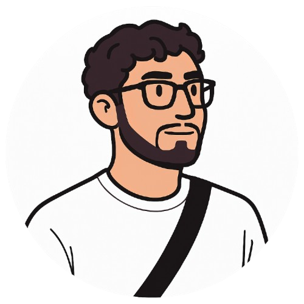

Wie ben ik?
Ik ben Soulaimane Achkif, een derdejaars student Digital Experience Design in België.
Digital Experience Design is een opleiding waarin front-end en back-end development,
UX/UI-design en 3D-visualisatie samenkomen. Die combinatie spreekt me enorm aan: ik hou ervan
om een idee helemaal zelf uit te werken, van de eerste schets en gebruikersflow tot de
uiteindelijke, werkende website of applicatie.
Mijn aanpak
Voor elk project begin ik met de gebruiker: wat wil die bereiken, en hoe maak ik dat pad zo
eenvoudig en aangenaam mogelijk? Daarna vertaal ik dat naar een technische oplossing. Ik werk
graag met HTML, CSS en JavaScript aan de front-end, ondersteund door PHP en React voor meer
dynamische functionaliteit. Voor het ontwerp gebruik ik Figma om prototypes en visuele
concepten uit te werken, en met Blender maak ik 3D-modellen en renders die een project net dat
extra tikje realisme en sfeer geven.
Waarom dit portfolio?
Deze portfolio-website toont een selectie van projecten waar ik het afgelopen jaar aan heb
gewerkt: van een AI-copiloot voor autobestuurders, over een sfeervolle 3D-render van een
Japanse ramenkiosk, tot een overzichtelijke TO-DO-webapplicatie. Elk project leerde me iets
nieuws over interactiedesign, code-structuur of visuele storytelling. Scroll gerust verder om
mijn vaardigheden en projecten te bekijken, of neem contact met me op via het formulier
onderaan de pagina.
Opleiding & toekomstplannen
Naast mijn opleiding Digital Experience Design werk ik voortdurend aan side-projects om nieuwe
technologieën te verkennen, zoals moderne CSS-animaties, 3D-interacties in de browser en
toegankelijke formulieren. Ik vind het belangrijk dat een website niet alleen visueel
aantrekkelijk is, maar ook snel laadt, goed werkt op mobiel en toegankelijk is voor iedereen.
Op termijn wil ik doorgroeien naar een rol waarin front-end development en UX-design samenkomen,
zodat ik zowel de technische implementatie als de gebruikerservaring van een product in handen
kan nemen. Ben je op zoek naar een gemotiveerde stagiair of freelancer voor een front-end,
UX- of 3D-project? Neem gerust contact met me op via het formulier onderaan deze pagina.